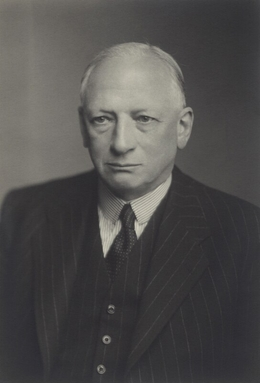
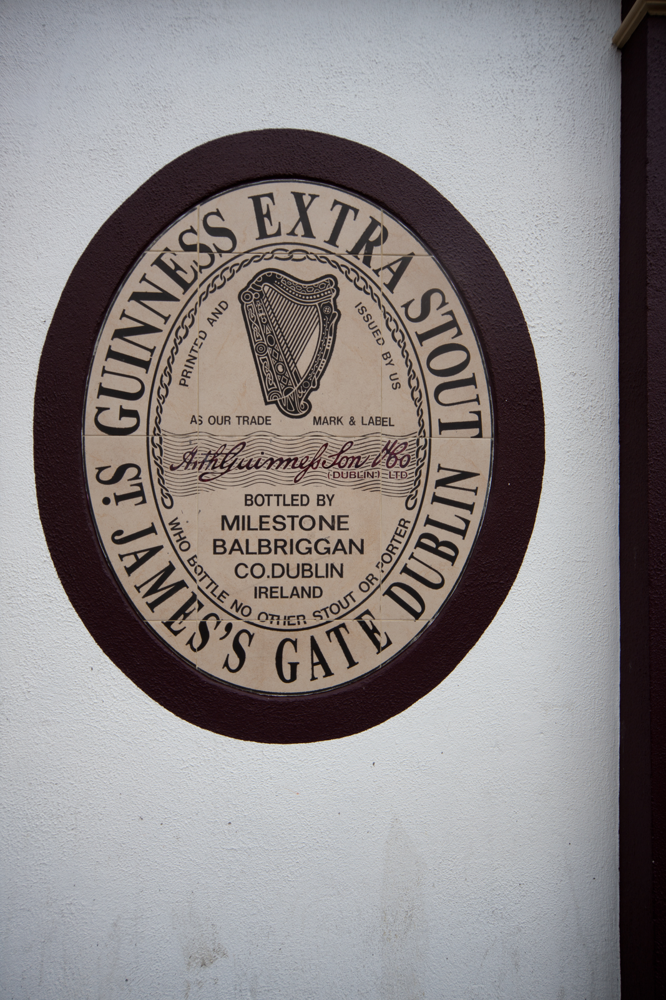
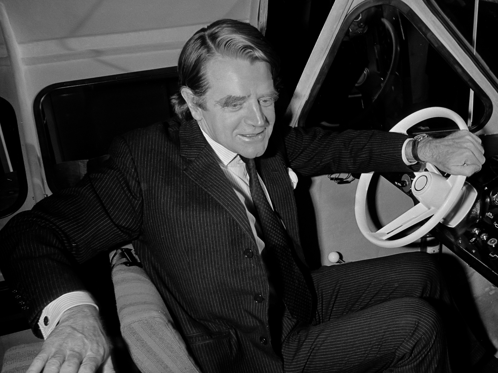
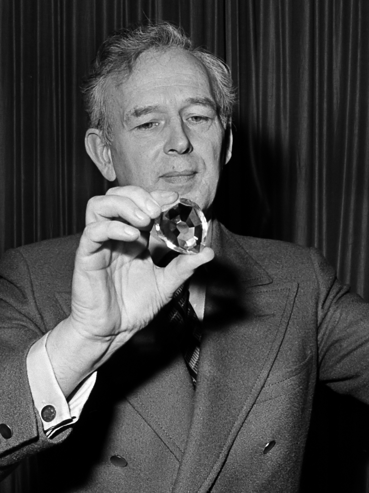
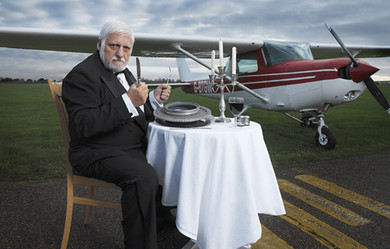
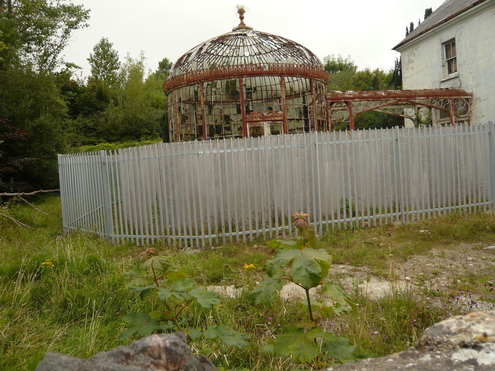

金氏世界紀錄的由來：一場因「歐洲哪種野鳥飛最快」引發的酒吧群毆爭論
共 41 幕分鏡 · 預估成片總長度：11分13秒 (674.0s) · 自動生成於 20261026_Guinness
🎞️ 各場景分鏡與語音審查
001_shot_1 · 大家好
時長: 14.06s

002_shot_2 · 回到當時那個風雲變幻的大環境來看
🖼️ 畫中畫 PiP
時長: 16.99s

疊加參考圖 (PiP)：
003_shot_3 · 那時候既沒有網際網路也沒有隨手可
時長: 9.57s

004_shot_4 · 在愛爾蘭斯萊尼河畔的一處傳統貴族
🖼️ 畫中畫 PiP
時長: 12.38s

疊加參考圖 (PiP)：

005_shot_5 · 當一隻野鳥振翅掠過頭頂灰濛濛的天
🖼️ 畫中畫 PiP
時長: 11.98s

疊加參考圖 (PiP)：
006_shot_6 · 到了當天晚上的莊園聚餐為了給自己
🖼️ 畫中畫 PiP
時長: 16.99s

疊加參考圖 (PiP)：
007_shot_7 · 這幫有頭有臉的紳士翻遍了豪宅圖書
時長: 11.89s

008_shot_8 · 但這可不僅僅是上流社會貴族老爺們
時長: 17.39s

009_shot_9 · 你必須理解當時英國基層酒館那種粗
時長: 20.79s

010_shot_10 · 每一天晚上各大酒吧都要消耗掉數百
🖼️ 畫中畫 PiP
時長: 15.18s

疊加參考圖 (PiP)：

011_shot_11 · 只要有人拍響桌子爭論金鴴和紅松雞
時長: 15.34s

012_shot_12 · 休比弗爵士敏銳地嗅到了一個極其詭
時長: 20.98s

013_shot_13 · 既然自家的黑啤酒每天都在催生這幫
時長: 15.38s

014_shot_14 · 但問題是在冷戰時期想建立一個無所
時長: 14.38s

015_shot_15 · 時間來到了一九五四年破局的轉機終
🖼️ 畫中畫 PiP
時長: 21.19s

疊加參考圖 (PiP)：

016_shot_16 · 查塔威向休比弗引薦了一對在倫敦體
🖼️ 畫中畫 PiP
時長: 21.95s
無畫面
疊加參考圖 (PiP)：

017_shot_17 · 休比弗爵士在倫敦總部高級辦公室裡
🖼️ 畫中畫 PiP
時長: 21.39s

疊加參考圖 (PiP)：
018_shot_18 · 正式簽訂合約之後兄弟倆只有不到一
🖼️ 畫中畫 PiP
時長: 18.19s
無畫面
疊加參考圖 (PiP)：
019_shot_19 · 麥克沃特兄弟依靠老式打字機與笨重
時長: 15.78s

020_shot_20 · 哪怕冷戰鐵幕嚴密隔絕了西方社會與
🖼️ 畫中畫 PiP
時長: 10.53s
無畫面
疊加參考圖 (PiP)：
021_shot_21 · 這對雙胞胎兄弟每週在高壓環境下工
時長: 21.99s

022_shot_22 · 金鴴在全速飛行時的最高時速大約是
🖼️ 畫中畫 PiP
時長: 21.02s

疊加參考圖 (PiP)：
023_shot_23 · 原來休比弗爵士和那些爭吵不休的酒
時長: 16.83s

024_shot_24 · 一九五五年八月二十七日第一版正式
時長: 20.19s

025_shot_25 · 沒想到樣書在倫敦各大書店曝光之後
時長: 10.53s

026_shot_26 · 短短四個月時間內這本綠皮小手冊連
時長: 15.18s

027_shot_27 · 更戲劇性的是整個英國的酒吧生態因
時長: 14.98s

028_shot_28 · 每當吧台邊有人為了荒謬的數字爭得
時長: 16.42s

029_shot_29 · 爭吵的核心瞬間有了白紙黑字且不可
時長: 15.78s

030_shot_30 · 隨著這本書被翻譯成數十種語言銷往
時長: 17.38s

031_shot_31 · 這份巨大的商業成功背後也伴隨著殘
🖼️ 畫中畫 PiP
時長: 15.92s
無畫面
疊加參考圖 (PiP)：
032_shot_32 · 隨著麥克沃特兄弟獨創的人肉記憶圖
時長: 21.59s

033_shot_33 · 各路挑戰者為了在書中霸佔一個版面
🖼️ 畫中畫 PiP
時長: 23.91s

疊加參考圖 (PiP)：

034_shot_34 · 金氏世界紀錄官方最後不得不緊急出
時長: 11.57s

035_shot_35 · 我只能說人類為了在世界上留下哪怕
時長: 16.6s

036_shot_36 · 回過頭看這場持續了半個多世紀的全
🖼️ 畫中畫 PiP
時長: 19.19s

疊加參考圖 (PiP)：

037_shot_37 · 如今這本書每年在全球超過一百個國
時長: 15.94s

038_shot_38 · 人類本質上就是一種無法忍受生活在
時長: 15.58s

039_shot_39 · 正是這份看似滑稽可笑的較真推動著
🖼️ 畫中畫 PiP
時長: 16.82s

疊加參考圖 (PiP)：

040_shot_40 · 那麼如果是你身處在那個追求極致的
時長: 10.57s

041_shot_41 · 如果你喜歡這種深挖歷史背面荒誕真
時長: 13.66s